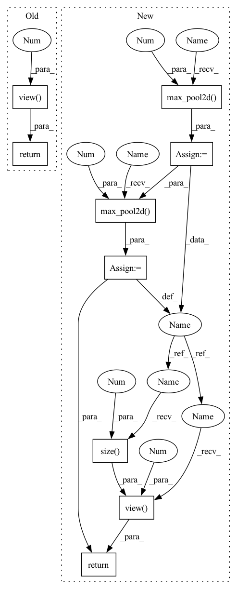

Pattern ID :28148
Before Change
def forward(self, x):
x = self.pool(F.relu(self.conv1(x)))
x = self.pool(F.relu(self.conv2(x)))
x = x.view(-1 , 16*5*5)
x = F.relu(self.fc1(x))
x = F.relu(self.fc2(x))
x = self.fc3(x)
return x
After Change
def forward(self, x):
out = F.relu(self.conv1(x))
out = F .max_pool2d( out, 2 )
out = F.relu(self.conv2(out))
out = F .max_pool2d( out, 2 )
out = out.view(out.size(0 ) , -1 )
out = F.relu(self.fc1(out))
out = F.relu(self.fc2(out))
out = self.fc3(out)
return out
In pattern: SUPERPATTERN
Frequency: 3
Non-data size: 9
Instances Fragment ID: 83096691
Project Name: johnsk95/pt4al
Commit Name: 41e053e2061615c65395447ab947ebf938bcb53b
Time: 2017-04-17
Author: kuang.liu@hotmail.com
File Name: models/lenet.py
M Class Name: LeNet
N Class Name: LeNet
M Method Name: forward(2)
N Method Name: forward(2)
M Parent Class: nn.Module
N Parent Class: nn.Module
M File Name: models/lenet.py
N File Name: models/lenet.py
M Start Line: 16
M End Line: 22
N Start Line: 15
N End Line: 23
Before Change
def forward(self, x):
self._check_input(x)
f = self.backbone(x)
return f.view( f.size(0), -1 )
@BACKBONE_REGISTRY.register()
def cnn_digitsdg(**kwargs):After Change
x = self.conv1(x)
x = F.max_pool2d(x, 2)
x = self.conv2(x)
x = F.max_pool2d( x, 2 )
x = self.conv3(x)
x = F.max_pool2d(x, 2)
x = self.conv4(x)
x = F.max_pool2d( x, 2 )
return x.view(x.size(0 ) , -1 )
@BACKBONE_REGISTRY.register()
def cnn_digitsdg(**kwargs): Fragment ID: 83096690
Project Name: kaiyangzhou/dassl.pytorch
Commit Name: 118f8a1fb45cc7e833d86822ed3571dabcdb4cc6
Time: 2020-05-11
Author: k.zhou@surrey.ac.uk
File Name: dassl/modeling/backbone/cnn_digitsdg.py
M Class Name: ConvNet
N Class Name: ConvNet
M Method Name: forward(2)
N Method Name: forward(2)
M Parent Class: Backbone
N Parent Class: Backbone
M File Name: dassl/modeling/backbone/cnn_digitsdg.py
N File Name: dassl/modeling/backbone/cnn_digitsdg.py
M Start Line: 42
M End Line: 43
N Start Line: 40
N End Line: 48
Before Change
def forward(self, x):
x = self.pool(F.relu(self.conv1(x)))
x = self.pool(F.relu(self.conv2(x)))
x = x.view(-1 , 16*5*5)
x = F.relu(self.fc1(x))
x = F.relu(self.fc2(x))
x = self.fc3(x)
return x
After Change
def forward(self, x):
out = F.relu(self.conv1(x))
out = F.max_pool2d( out, 2 )
out = F.relu(self.conv2(out))
out = F.max_pool2d( out, 2 )
out = out.view(out.size(0 ) , -1 )
out = F.relu(self.fc1(out))
out = F.relu(self.fc2(out))
out = self.fc3(out)
return out
Fragment ID: 83096686
Project Name: alvinwan/neural-backed-decision-trees
Commit Name: 41e053e2061615c65395447ab947ebf938bcb53b
Time: 2017-04-17
Author: kuang.liu@hotmail.com
File Name: models/lenet.py
M Class Name: LeNet
N Class Name: LeNet
M Method Name: forward(2)
N Method Name: forward(2)
M Parent Class: nn.Module
N Parent Class: nn.Module
M File Name: models/lenet.py
N File Name: models/lenet.py
M Start Line: 16
M End Line: 22
N Start Line: 15
N End Line: 23